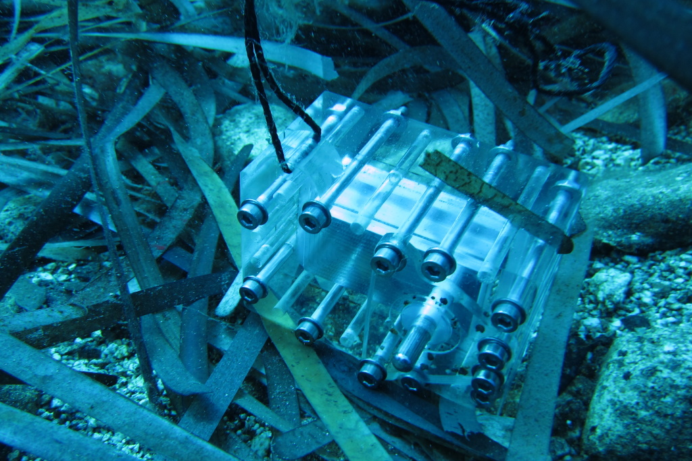

Devices
MC HCK Temperature Sensor
The MC HCK Temperature Sensor is designed to read and record more than 1 million time stamped temperature points over a period of a few months to years at a depth of between 0 and 30 meters (although it expected that it can be used at much deeper depths, this has not been tested). It uses a MC HCK populated with a clock crystal, temperature sensor, SPI flash, resistor and coin battery. The case is milled using a 2.5 D mill and sealed using silicone gaskets and stainless steel screws.
